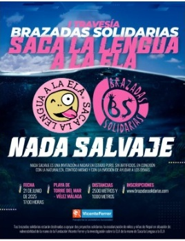
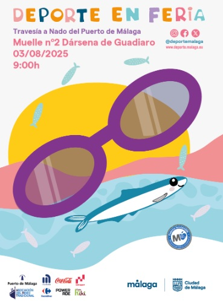
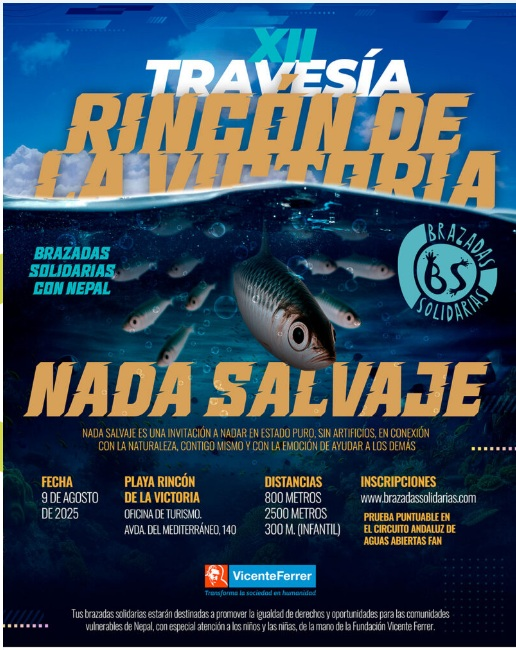
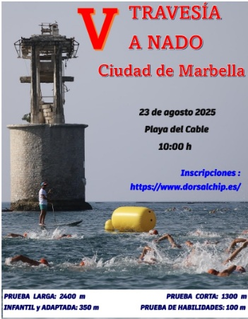
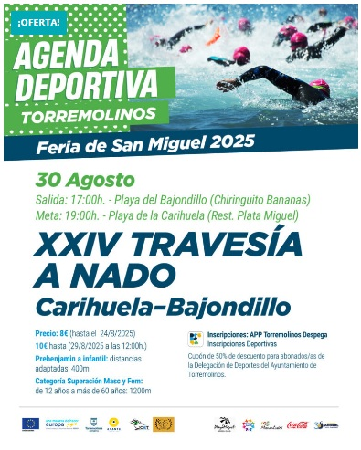
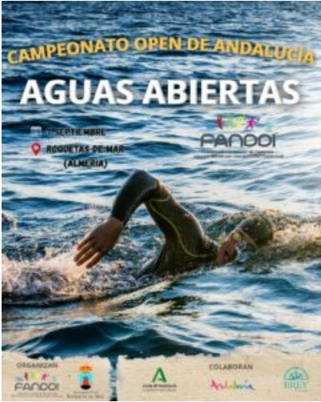
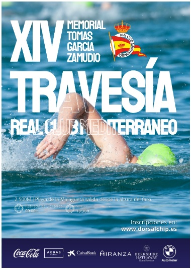
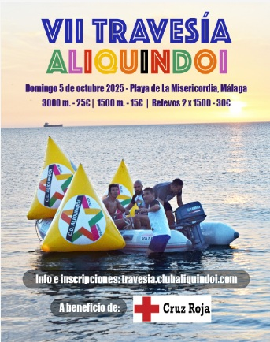

Travesías a Nado - Aguas Abiertas
Eventos de travesías por Fechas
Ningún evento registrado en 2022
- Clasificación Provisional Circuito Andaluz Aguas Abiertas 2025
- Resultados Circuito de Travesías a nado de Málaga 2025
- Resultados Circuito Provincial de Travesías a Nado Diputación de Granada 2025
- Resultados Circuito Provincial DIPUTACIÓN CÓRDOBA AGUAS ABIERTAS 2025
- Resultados Circuito Provincial DIPUTACIÓN HUELVA AGUAS ABIERTAS 2025
- Clasificación Circuito Diputación Cádiz Aguas Abiertas 2025
Torre del Mar - I TRAVESÍA BRAZADAS SOLIDARIAS CONTRA LA ELA
21 de Junio de 2025

Playas de Torre del Mar

Travesía a Nado Puerto de Málaga
03 de Agosto de 2025

Puerto de Málaga
Travesía Acantilados Rincón de la Victoria
09 de Agosto de 2025

Acantilados del Rincón de la Victoria
Travesía a Nado Marbella
23 de Agosto de 2025

Playa del Cable de Marbella
FINALIZADO
Información del evento:
- Resultados Completos
- Resultados de la Web https://www.dorsalchip.es/carrera/2025/8/23/V_Travesia_a_nado_Ciudad_De_Marbella.aspx#
- Bases
- Inscripción
- Cómo Llegar
Torremolinos - XXV Travesía a Nado Bajondillo-Carihuela
30 de Agosto de 2025

Playa del Cable de Marbella
Campeonato Andalucía FANDDI Aguas Abiertas
07 de Septiembre de 2025

Playa Roquetas de Mar
Torremolinos - Travesía a nado Faro de Torrox
07 de Septiembre de 2025

Faro de Torrox
Travesía del Club Mediterraneo
20 de Septiembre de 2025

Playa de Málaga
FINALIZADO
Información del evento:
- Bases
- Resultados Completos 2.500 m
- Resultados 2.500 m Masculino
- Resultados 2.500 m Femenino
- Inscripción
- Cómo Llegar
VII Travesía Solidaria Club de Nado Aliquindoi
05 de Octubre de 2025

Playa de Málaga
Calendario de Eventos, Actividades Deportivas y Lúdicas
Calendario Ampliado